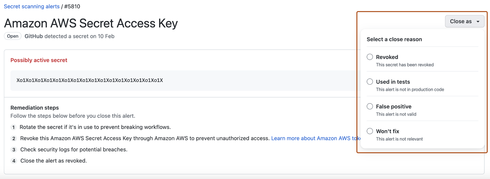

After reviewing the details of a secret scanning alert, you should fix and then close the alert.
Once a secret has been committed to a repository, you should consider the secret compromised. GitHub recommends the following actions for compromised secrets:
Note
Reporting a privately exposed secret to GitHub is in public preview and subject to change. The feature is currently only available for GitHub personal access tokens (v1 and v2).
On GitHub, navigate to the main page of the repository.
Under the repository name, click the Security and quality tab. If you cannot see the " Security and quality" tab, select the dropdown menu, and then click Security and quality.
In the left sidebar, under "Vulnerability alerts", click Secret scanning.
From the alert list, click the alert you want to view.
In the alert view for the leaked secret, click Report leak.
Note
In order to prevent breaking workflows, consider first rotating the secret before continuing, as disclosing it could lead to the secret being revoked. If possible, you should also reach out to the token owner to let them know about the leak and coordinate a remediation plan.
Review the information in the dialog box, then click I understand the consequence, report this secret.
Note
Secret scanning doesn't automatically close alerts when the corresponding token has been removed from the repository. You must manually close these alerts in the alert list on GitHub.
On GitHub, navigate to the main page of the repository.
Under the repository name, click the Security and quality tab. If you cannot see the " Security and quality" tab, select the dropdown menu, and then click Security and quality.
In the left sidebar, under "Vulnerability alerts", click Secret scanning.
Under "Secret scanning", click the alert you want to view.
To dismiss an alert, select the "Close as" dropdown menu and click a reason for resolving an alert.

Optionally, in the "Comment" field, add a dismissal comment. The dismissal comment will be added to the alert timeline and can be used as justification during auditing and reporting.
Click Close alert.